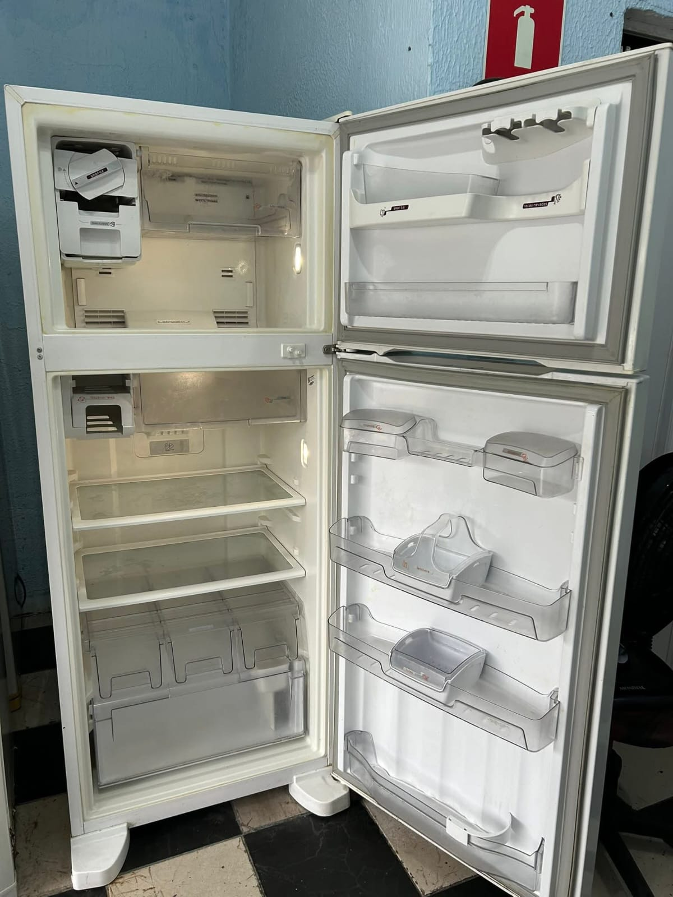
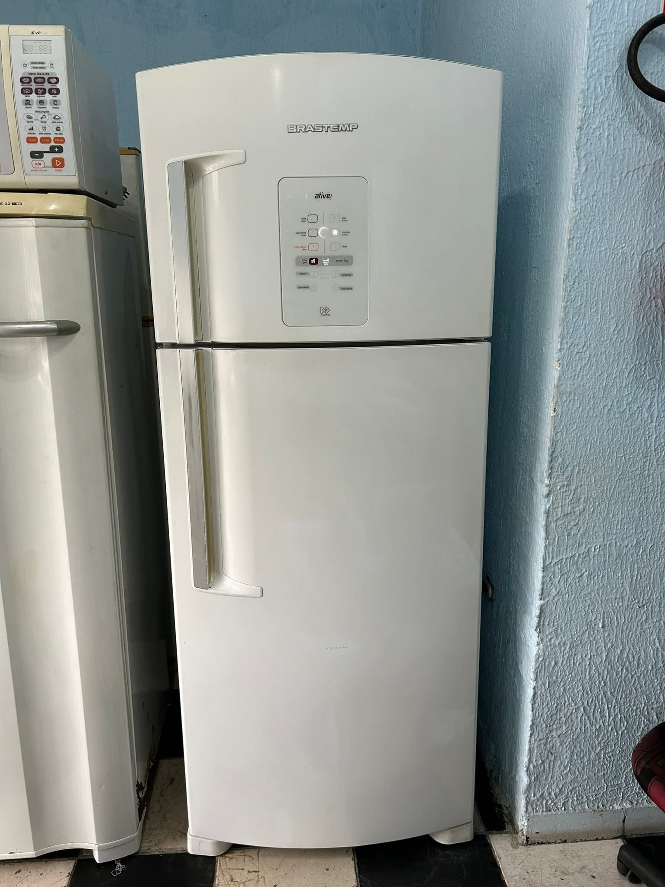
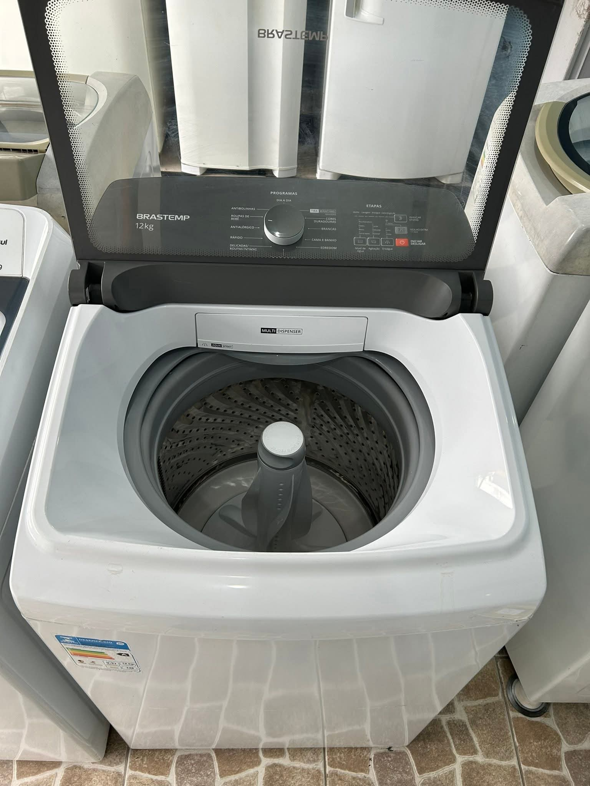
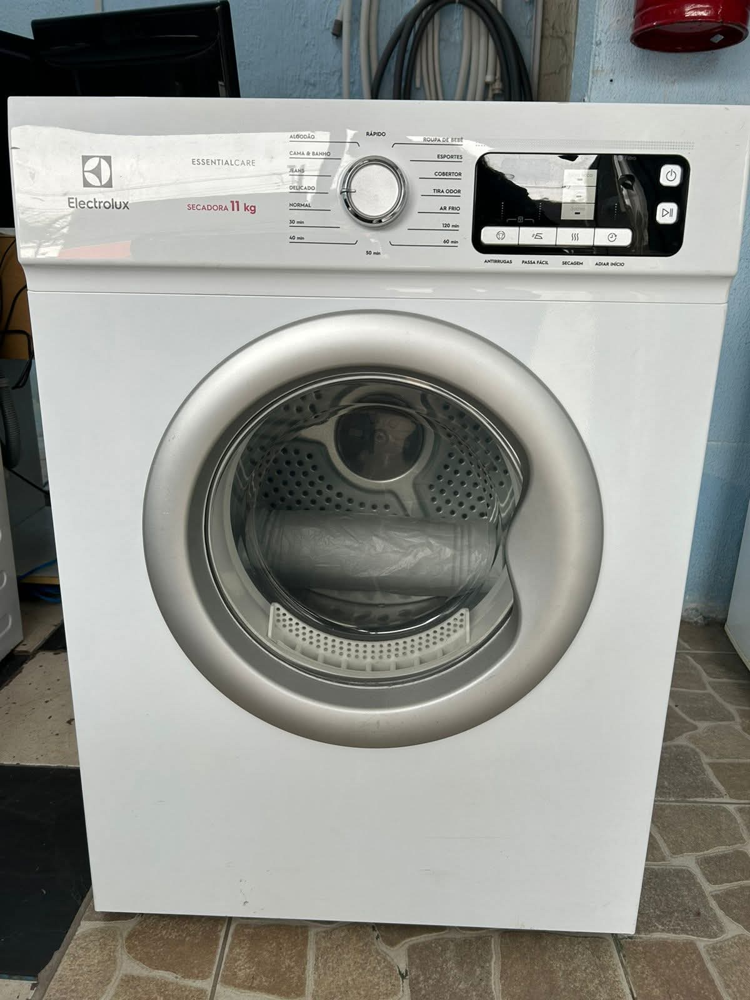
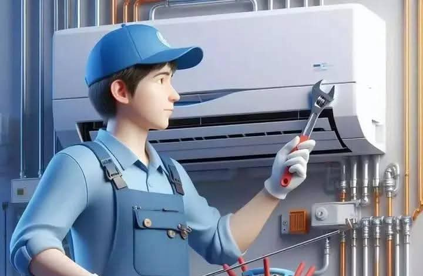
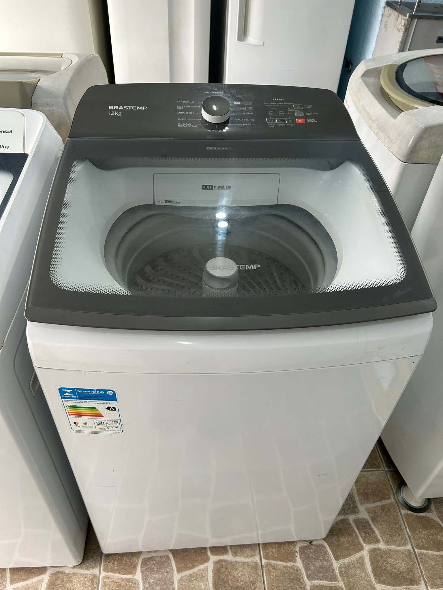
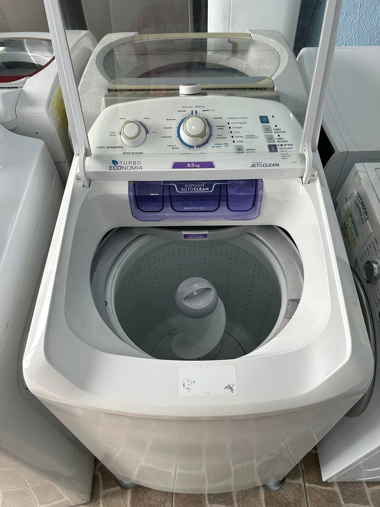
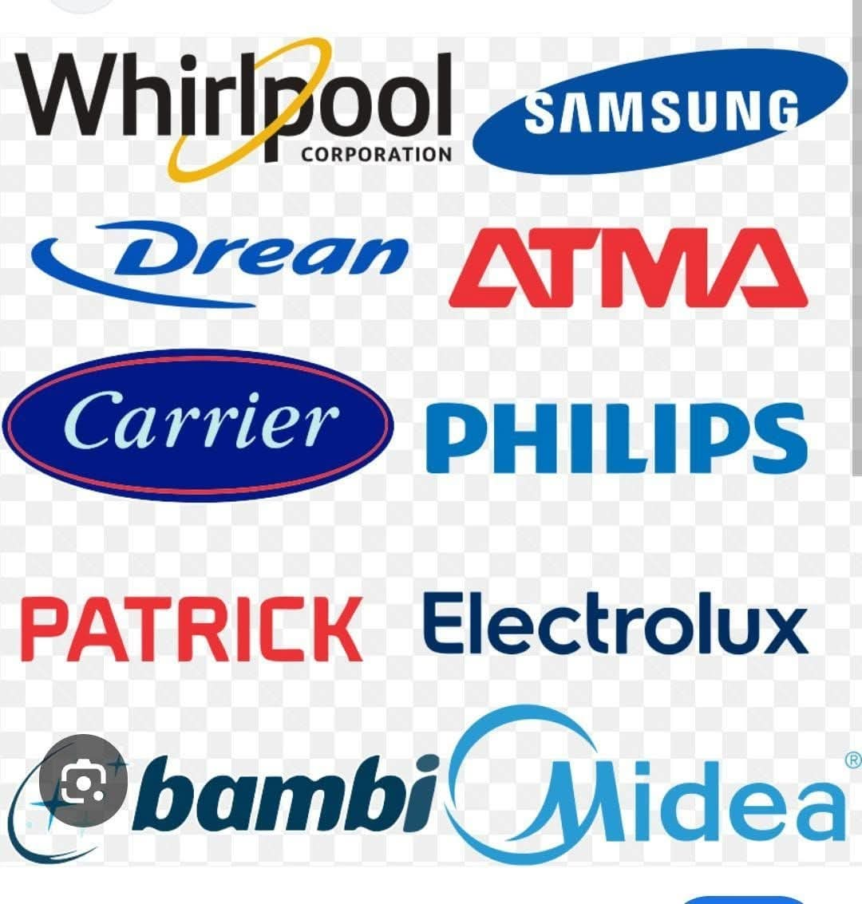

ANTO Servicio Técnico · Línea Blanca Industrial, Comercial y Residencial
Su Electrodoméstico No Tiene Que Esperar a Mañana
Reparación, mantenimiento e instalación de refrigeradores, lavadoras, secadoras y aires acondicionados. Atención directa con Víctor Manuel, técnico especializado en línea blanca para hogares, negocios e industrias.
Reparamos

100%
Atención directa del técnico
Quién está detrás del servicio
Víctor Manuel, Técnico en Línea Blanca
ANTO Servicio Técnico es una empresa especializada en la reparación y mantenimiento de línea blanca, con atención tanto industrial como comercial. Su fundador, Víctor Manuel, es técnico en reparación de refrigeradores, lavadoras y secadoras, con experiencia en instalación y reparación de equipos residenciales, comerciales e industriales.
El enfoque del negocio está en la atención al cliente y la calidad del servicio: diagnóstico claro, trato directo con el técnico y compromiso real con que su equipo vuelva a funcionar como debe.
Equipos que reparamos
Marcas atendidas
Atención directa
Hogar y Negocio
A quién atendemos
Lo que hacemos
Servicios de Reparación y Mantenimiento
Diagnóstico preciso y reparación confiable para los equipos que su hogar o negocio no pueden dejar de usar.

Refrigeradores y Congeladores
Diagnóstico y reparación de refrigeradores y congeladores residenciales y comerciales: fugas de gas, compresores, termostatos y fallas de enfriamiento.

Lavadoras
Reparación de lavadoras de carga superior y frontal: motores, bandas, tarjetas electrónicas, fugas de agua y ruidos anormales.

Secadoras
Servicio técnico para secadoras a gas y eléctricas: falta de calor, ruidos, tambores, correas y sistemas de encendido.

Aires Acondicionados
Instalación, mantenimiento y reparación de aires acondicionados residenciales, comerciales e industriales, con revisión de gas y sistema eléctrico.
Así trabajamos
Servicio Directo, Sin Complicaciones

Mantenimiento de Lavadoras
Revisión completa de tambor, dispensador y sistema de centrifugado.

Servicio de Lavadoras y Secadoras
Diagnóstico y reparación para uso residencial, comercial e industrial.

Sin importar la marca
Trabajamos con Todas las Marcas
Contamos con la experiencia para diagnosticar y reparar el equipo que tenga en casa o en su negocio, sin importar la marca o el modelo.
100%
Atención directa
Por qué elegirnos
La Diferencia ANTO
Reparar un electrodoméstico es una decisión de confianza — la hacemos simple y directa.
Atención Directa del Técnico
Habla directo con Víctor Manuel, sin intermediarios ni citas perdidas.
Servicio Industrial y Comercial
Atendemos hogares, negocios e instalaciones industriales con la misma exigencia.
Todas las Marcas
Refrigeradores, lavadoras, secadoras y aires acondicionados de cualquier marca.
Diagnóstico Claro y Honesto
Se le explica la falla y el costo antes de reparar, sin sorpresas.
Cómo funciona
Su Cotización en 4 Pasos
01
Cuéntenos la falla de su equipo por WhatsApp o llamada
02
Agendamos una visita a su domicilio, negocio o industria
03
Diagnóstico en sitio y cotización clara antes de reparar
04
Reparación o mantenimiento con la garantía del trabajo
Contáctanos
Solicite su Cotización
Cuéntenos qué equipo necesita reparación y le respondemos directo por WhatsApp o llamada.
Teléfono / WhatsApp
WhatsApp directo
Cobertura
Servicio a domicilio para hogares, negocios e industrias
Cuéntenos la Falla
Le respondemos a la brevedad por WhatsApp o teléfono con su cotización.